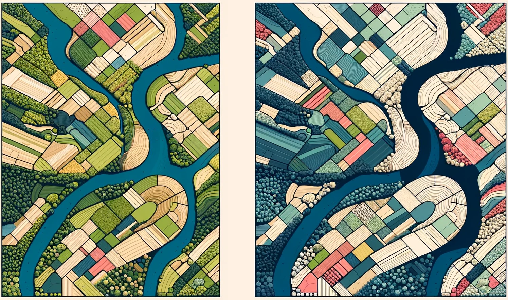

Biodiversidad
 La variabilidad entre organismos vivos de todas las fuentes, incluidos los ecosistemas terrestres, marinos y otros ecosistemas acuáticos y los complejos ecológicos de los que forman parte. Esto incluye la variación en los atributos genéticos, fenotípicos, filogenéticos y funcionales, así como los cambios en la abundancia y la distribución a lo largo del tiempo y el espacio dentro de las especies, las comunidades biológicas y los ecosistemas y entre ellos.
Source: Diaz et al., 2015
La variabilidad entre organismos vivos de todas las fuentes, incluidos los ecosistemas terrestres, marinos y otros ecosistemas acuáticos y los complejos ecológicos de los que forman parte. Esto incluye la variación en los atributos genéticos, fenotípicos, filogenéticos y funcionales, así como los cambios en la abundancia y la distribución a lo largo del tiempo y el espacio dentro de las especies, las comunidades biológicas y los ecosistemas y entre ellos.
Source: Diaz et al., 2015
Escenarios
 Representaciones de futuros posibles para uno o varios componentes de un sistema, en particular para los motores del cambio en la naturaleza y los beneficios de la naturaleza, incluidas las opciones políticas o de gestión alternativas.
Source: IPBES, 2018
Representaciones de futuros posibles para uno o varios componentes de un sistema, en particular para los motores del cambio en la naturaleza y los beneficios de la naturaleza, incluidas las opciones políticas o de gestión alternativas.
Source: IPBES, 2018
Escenarios Normativos
Los escenarios de búsqueda de objetivos (también conocidos como "escenarios de búsqueda de metas" o "escenarios normativos") son escenarios que comienzan con la definición de un objetivo claro, o un conjunto de objetivos, especificados en términos de metas alcanzables, o como una función objetivo que debe optimizarse, y luego identifican diferentes vías para lograr este resultado (por ejemplo, mediante backcasting).
Source: IPBES core glossary, 2021
IUCN Categoría Ia
Las zonas de categoría Ia están estrictamente protegidas para conservar la biodiversidad y las características geológicas con un impacto humano mínimo. El objetivo de estas reservas es preservar los ecosistemas en su estado natural, libres de interferencias humanas modernas, sirviendo como lugares de referencia críticos para la investigación científica y el seguimiento. El acceso está muy restringido para evitar perturbaciones y garantizar que los procesos ecológicos permanezcan intactos. A diferencia de los espacios naturales (Ib), los espacios Ia suelen ser más pequeños y estar más rigurosamente controlados, excluyendo los asentamientos y la mayoría de las actividades humanas. Dan prioridad al mantenimiento de ecosistemas autosuficientes sin una gestión continua, lo que las distingue de las áreas de categoría IV o V, que requieren una intervención activa.
Source: Directrices de la IUCN, 2013
IUCN Categoría Ib
La categoría Ib protege vastos paisajes no modificados en los que dominan los procesos naturales y la influencia humana es mínima. Estas zonas conservan su carácter salvaje, libres de infraestructuras permanentes, y permiten una visita autónoma limitada (por ejemplo, senderismo). Las comunidades indígenas pueden practicar estilos de vida tradicionales de bajo impacto. A diferencia de la Categoría Ia, las áreas Ib son más extensas y toleran cierta presencia humana, aunque se diferencian de la Categoría II en que excluyen las infraestructuras de turismo de masas. Su función incluye la conservación de ecosistemas a gran escala, procesos evolutivos y soledad, lo que las hace vitales para la resiliencia climática y la migración de especies.
Source: Directrices de la IUCN, 2013
IUCN Categoría VI
La categoría VI conserva los ecosistemas mediante el uso sostenible de los recursos naturales, a menudo en grandes áreas predominantemente naturales. Se permiten actividades no industriales de baja intensidad (por ejemplo, pesca tradicional, agrosilvicultura) si son compatibles con la conservación. A diferencia de los paisajes culturales de la Categoría V, las áreas VI dan prioridad a la biodiversidad en entornos casi naturales, al tiempo que apoyan los medios de subsistencia locales. Pueden incluir zonas de protección más estricta (por ejemplo, núcleos Ia) y son fundamentales en regiones donde la conservación depende de la integración de las necesidades humanas con la resiliencia ecológica.
Source: Directrices de la IUCN, 2013
Las Contribuciones de la Naturaleza a las Personas (NCP)
Las contribuciones de la naturaleza a las personas (NPC) son todas las contribuciones, tanto positivas como negativas, de la naturaleza viva (es decir, la diversidad de organismos, ecosistemas y sus procesos ecológicos y evolutivos asociados) a la calidad de vida de las personas. Entre las contribuciones beneficiosas de la naturaleza se incluyen el suministro de alimentos, la purificación del agua, el control de las inundaciones y la inspiración artística, mientras que entre las contribuciones perjudiciales se incluyen la transmisión de enfermedades y la depredación que daña a las personas o sus bienes. Muchos PNC pueden percibirse como beneficios o perjuicios en función del contexto cultural, temporal o espacial.
Source: Pörtner et al., 2021
Marco de Futuros de la Naturaleza (NFF)
Una heurística que capta diversos valores positivos de las relaciones entre los seres humanos y la naturaleza a lo largo de tres tipos de perspectivas de valores específicos sobre la naturaleza: valores intrínsecos (también conocidos como "la naturaleza por la naturaleza"), instrumentales ("la naturaleza para la sociedad") y relacionales ("la naturaleza como cultura/uno con la naturaleza"). Estos valores de la naturaleza no se excluyen mutuamente y están intrínsecamente entrelazados. En el contexto de la ciencia occidental, estos valores positivos pueden situarse en un espacio triangular cuyas puntas representan los tres tipos de perspectivas de valor de la naturaleza.
Source: IPBES, 2023
Modificación de la Ley Forestal y de Fauna Silvestre (Ley No. 31973, 2023)
A finales de 2023, el Congreso peruano aprobó la Ley n.º 31973, que modifica disposiciones clave de la Ley Forestal y de Fauna Silvestre de 2011. Las modificaciones alteran específicamente los artículos 29 y 33, suspendiendo el mandato de que la zonificación forestal es necesaria para otorgar títulos habilitantes para bosques de producción permanente. Además, la ley traslada la responsabilidad de aprobar la zonificación forestal del Ministerio del Ambiente (MINAM) al Ministerio de Desarrollo Agrario y Riego (MIDAGRI). Este cambio ha generado una fuerte oposición por parte de organizaciones indígenas, la sociedad civil y expertos en medio ambiente, que sostienen que puede provocar un aumento de la deforestación, socavar las funciones de los ecosistemas y la biodiversidad, e ignorar los derechos de los pueblos indígenas. Los críticos advierten de que la reforma no sólo podría fomentar la impunidad y debilitar la gobernanza ambiental, sino también obstaculizar la capacidad de Perú para cumplir sus compromisos internacionales en materia de cambio climático. Cabe destacar que la ley no entra en vigor automáticamente, ya que aún requiere reglamentos adicionales.
Source: World Resources Institute, 2024
Proyecto REDD+
REDD+ (abreviatura de «Reducción de Emisiones por Deforestación y Degradación Forestal») es una iniciativa climática internacional diseñada para frenar las emisiones de gases de efecto invernadero procedentes de los bosques en los países en desarrollo. Ofrece incentivos -a menudo a través de mercados de carbono u otros sistemas de pago- para proteger o gestionar de forma sostenible los bosques, en lugar de talarlos. De este modo, REDD+ puede ayudar a mantener la biodiversidad, ya que la conservación de una amplia gama de especies y ecosistemas suele ir de la mano del mantenimiento intacto de los bosques. Sin embargo, como han señalado los participantes en el proceso REDD+ de Perú, centrarse simplemente en el almacenamiento de carbono no garantiza hábitats sanos si no se abordan los problemas sociales, económicos y de gobernanza. Por ejemplo, la falta de claridad en los derechos sobre la tierra puede desencadenar conflictos, y las comunidades locales pueden no obtener beneficios justos a menos que se establezcan salvaguardias. Sin embargo, si se diseña bien, REDD+ puede canalizar fondos hacia zonas de conservación, impulsar medios de vida sostenibles y fomentar la cooperación entre organismos gubernamentales, pueblos indígenas, ONG y empresas privadas. Si se hace bien, es una oportunidad para afrontar juntos el cambio climático y la pérdida de biodiversidad.
Source: Entenmann & Schmitt, 2013
Uso y Ocupación del Suelo (LULC)

Uso del Suelo
El uso humano de un área específica para un propósito específico (como residencial, agrícola, recreativo, industrial, etc.). Influido por la cobertura del suelo, pero no sinónimo de ella. El cambio en el uso de la tierra se refiere a un cambio en el uso o la gestión de la tierra por parte de los seres humanos, que puede dar lugar a un cambio en la cobertura del suelo.
Ocupación del Suelo
La cobertura física de la tierra, normalmente expresada en términos de cobertura vegetal o falta de ella. Relacionado con, pero no sinónimo de uso del suelo.
Source: Milenium Ecosystem Assessement, 2005
Servicios Ecosistémicos (ES)
Los beneficios que las personas obtienen de los ecosistemas. En la Evaluación de los Ecosistemas del Milenio, los servicios de los ecosistemas pueden dividirse en de apoyo, de regulación, de aprovisionamiento y culturales. Esta clasificación, sin embargo, es sustituida en las evaluaciones de IPBES por el sistema utilizado en "Contribuciones de la naturaleza a las personas". Esto se debe a que IPBES reconoce que muchos servicios encajan en más de una de las cuatro categorías. Por ejemplo, la alimentación es un servicio de aprovisionamiento y, en muchas culturas, un servicio cultural.
Source: IPBES core glossary, 2021